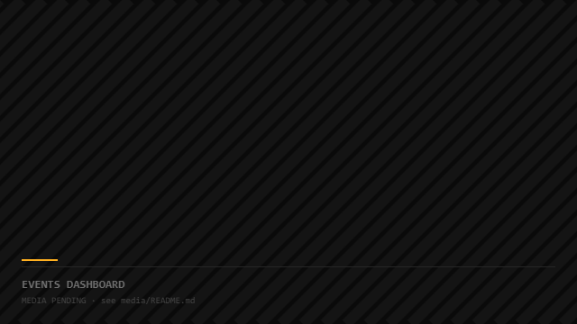
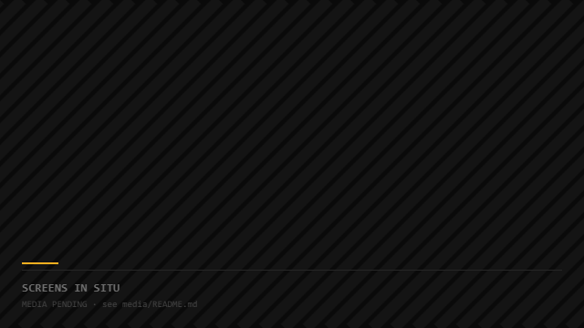

Hospitality Signage Network
Quiet screens, remote control.

Overview
A Yodeck and Intel NUC digital-signage deployment with a custom events dashboard — low-latency, remotely managed content across a hospitality property.
Hospitality signage fails quietly: stale content, dead players, and nobody on site who knows the system. The build had to be manageable from anywhere by non-technical staff.
I deployed a Yodeck and Intel NUC player network and built a custom events dashboard on top — low-latency updates, remote management, and a publishing flow simple enough to hand to the front desk.
Screens that stay current without a technician in the building — and a dashboard that made daily events publishing a two-minute task.
Built to be ignored
The best signage network is one nobody thinks about — updates land, screens stay alive, and the dashboard answers before anyone calls.
